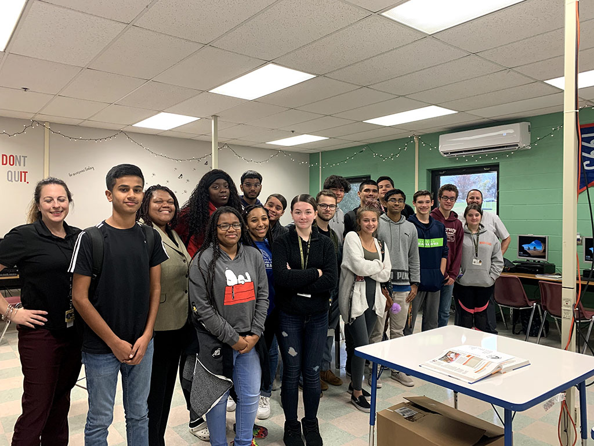
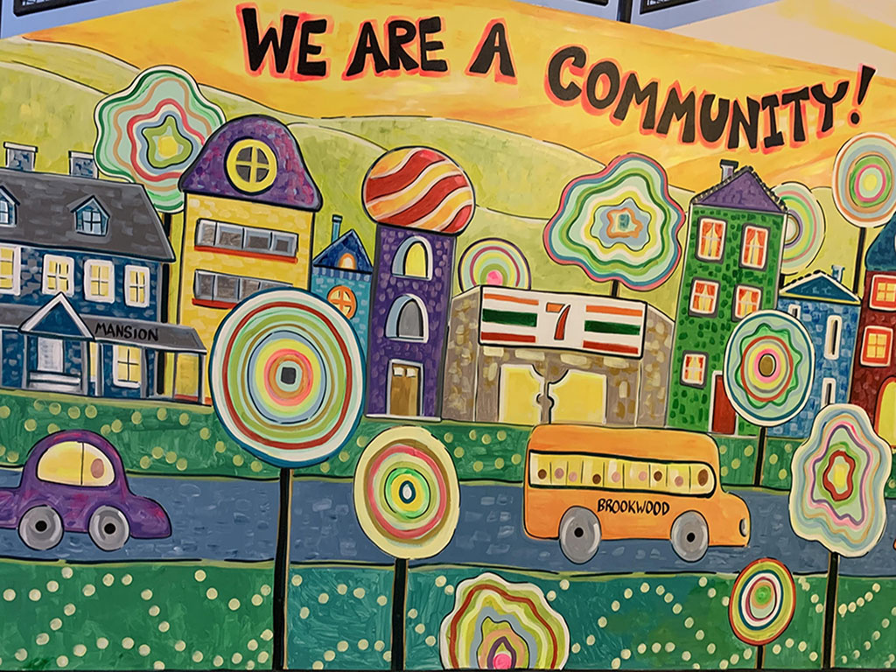
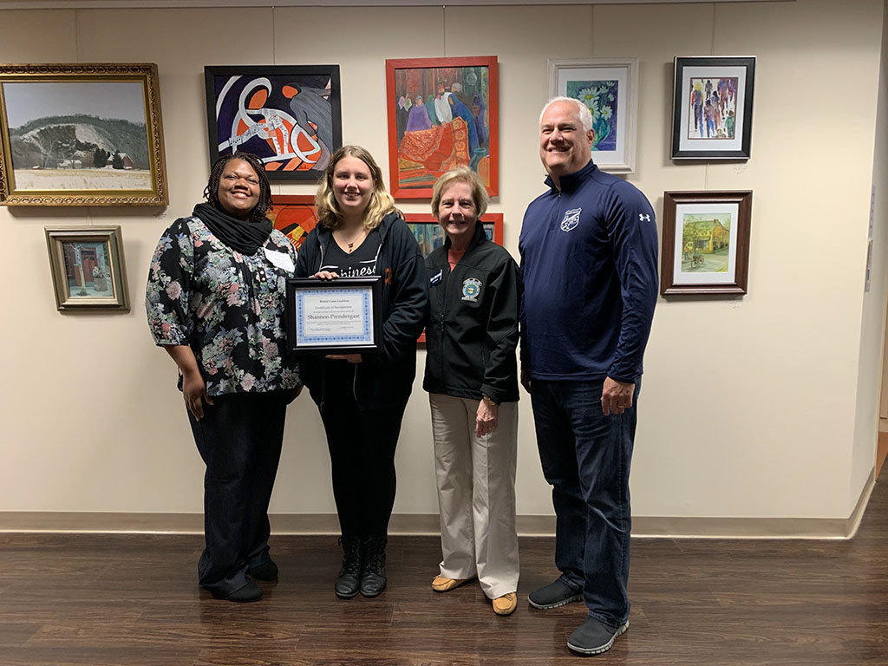
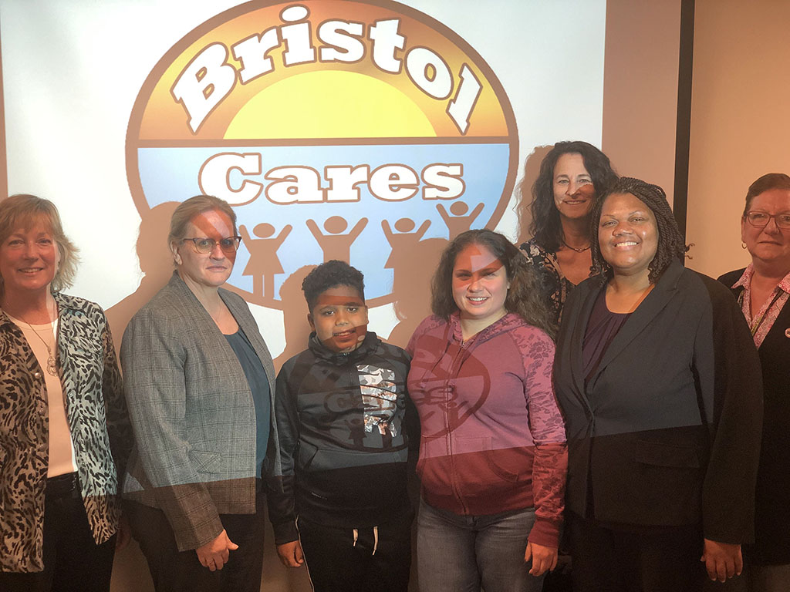
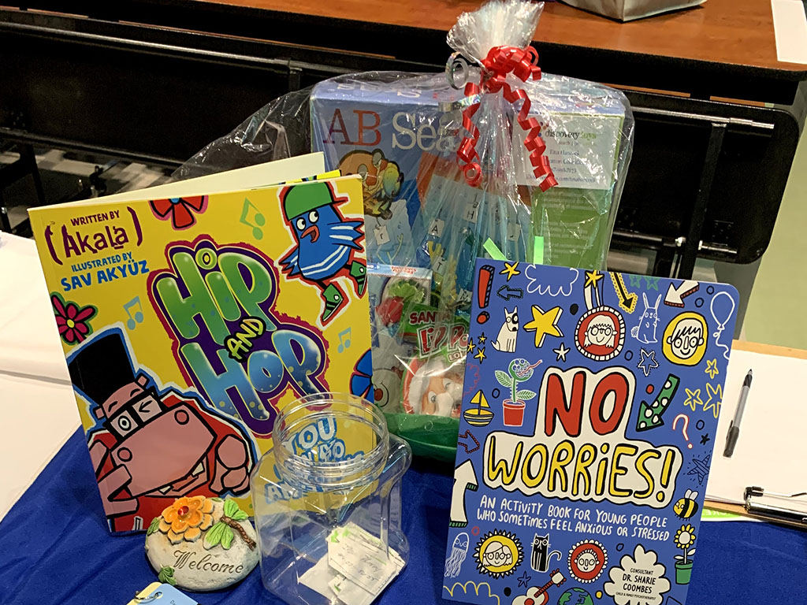
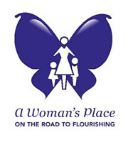
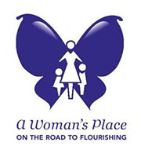

About Us
    Bristol Cares is a prevention-based coalition developed to support the positive youth development in the township and borough communities of Bristol, PA.
Mission & Values
Mission:
To create a community where youth feel valued, have a vision for the future, a sense of self and community.
• Helping our youth achieve their full potential.
• Providing engaging activities for youth around the key concepts of social emotional skills, vision of self, and community.
• Connecting our neighborhoods through collaboration to ensure drug free, safe, healthy, and happy united communities.
• Increasing bonding through attachment to family, community, and schools.
• Reducing alcohol, tobacco, and other drug use by building resiliency skills in our youth.
Communities That Care Program
Bristol Cares was developed under the Communities that Care (CTC) model in partnership with the Prevention Research Center at Pennsylvania State University. CTC is a prevention-based program that aids communities in marshalling resources and coming together to do good for youth. Through the assessment of risk factors and drivers for behaviors such as drug-use, CTC organizations address community needs and develop initiatives to support adolescent development.Partners
Our coalition wouldn’t be possible without the support and collaboration with community leaders and organizations. We are proud to have members representing organizations working towards causes in education, health, domestic violence, women’s rights, and more! Click here for the full list of partners. Become a partner today! 
